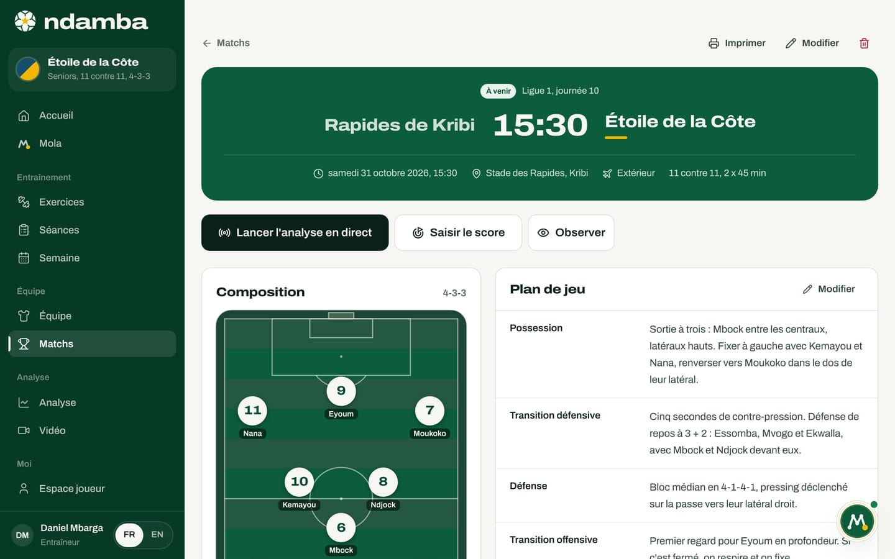
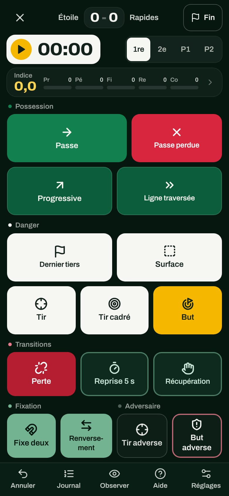

L’analyse en direct
Le codeur en direct, ses boutons et leurs codes, les raccourcis clavier, le chrono et les périodes, les corrections, l’écran du téléphone, et une méthode simple pour coder un match depuis la touche, même avec un parent bénévole.
10 min de lecture
La plupart des entraîneurs du continent n’ont ni analyste, ni caméra en hauteur. Ils ont un téléphone et une ligne de touche. C’est pour eux que Ndamba a été construit : un écran sombre, de grands boutons, un tap par action, et l’Indice Njangi qui se calcule pendant que le match se joue. À la mi-temps, vous savez déjà si votre équipe possède avec intention. Et parce que tout le monde code avec les mêmes boutons et les mêmes définitions, un match codé à Douala se compare à un match codé à Bafoussam. C’est le début d’une mesure commune.
Ouvrir le codeur
Il y a trois portes d’entrée :
- sur la feuille de match, le bouton Lancer l’analyse en direct (il devient Reprendre l’analyse en direct si le match est déjà en cours) ;
- dans Analyse, la rubrique À analyser en direct, avec Lancer le direct ou Reprendre le direct pour chaque match à venir ;
- après le match, dans le rapport, le bouton Corriger les tags.


Le codeur prend tout l’écran, sans menus. Un match à venir passe en En direct, au plus tard au premier tap. La croix en haut à gauche (Quitter le direct) vous ramène à Analyse ; le match reste en direct et vous pourrez reprendre là où vous en étiez.
Sur le plan Gratuit, comme sur Joueur Premium qui ne comprend pas les outils de l’entraîneur, un seul match peut être codé en direct. Au deuxième, le bouton de la feuille de match porte un cadenas et l’encadré Analyse en direct illimitée avec Coach Pro propose Voir les offres. Dans Analyse, la rubrique À analyser en direct le rappelle. Et si vous ouvrez le codeur par un autre chemin, un lien ou un favori par exemple, c’est le même encadré qui s’affiche à la place des boutons. Un match qui a déjà des tags n’est jamais bloqué. Les paiements ne sont pas encore branchés : activer une offre est aujourd’hui une démonstration (chapitre 24).
L’écran du codeur

En haut : le score (votre équipe à gauche, l’adversaire à droite), le chrono, les périodes, puis sur grand écran Annuler, Journal, l’œil pour observer, le clavier pour l’aide, les réglages et Fin du match. Au centre, les boutons, groupés en cinq familles : Possession, Danger, Fixation, Transitions et Adversaire. Chaque bouton affiche son compteur : le nombre d’actions de ce type déjà codées.
Sur grand écran, la colonne de droite montre l’Indice en direct sur 100 avec son appréciation (Possession sans intention, Njangi solide…), les cinq sous-indices sur 20, huit compteurs (Passes tentées, Conservation (K), Lignes traversées, Progressives, Surface, Pertes, Reprises en 5 s, Fixations) et le Journal du match avec les derniers tags.
À chaque tap, le bouton s’éclaire, le téléphone vibre s’il le peut, et un petit message confirme l’action avec la minute, par exemple « Passe 12’ ». Quand un tap ajoute d’autres tags, le message le dit aussi : « But 12’ », suivi de « Ajouté aussi : Tir, Tir cadré ».
Les boutons et leurs codes
Les définitions sont celles du chapitre 32 du Code Njangi, sans variation. Elles s’affichent aussi dans l’aide du codeur.
| Famille | Bouton | Code | Touche | Quand le toucher |
|---|---|---|---|---|
| Possession | Passe | PASS_OK | 1 | Toute passe qui arrive à un partenaire |
| Possession | Passe perdue | PASS_LOST | 2 | Passe interceptée, trop longue ou sortie ; elle compte aussi comme perte |
| Possession | Progressive | PROG | 3 | Passe ou conduite d’au moins 10 m vers le but adverse |
| Possession | Ligne traversée | LINE | 4 | Le ballon dépasse une ligne d’au moins deux adversaires et arrive à un partenaire qui le contrôle |
| Danger | Dernier tiers | FINAL3 | 5 | Ballon contrôlé dans les 35 derniers mètres, une fois par entrée |
| Danger | Surface | BOX | 6 | Ballon contrôlé dans la surface adverse |
| Danger | Tir | SHOT | 7 | Tout tir, même contré |
| Danger | Tir cadré | SHOT_IN | 8 | Tir qui oblige le gardien à intervenir ou qui entre |
| Danger | But | GOAL | 9 | But pour nous |
| Fixation | Fixe deux | FIX2 | F | Dribble ou conduite qui attire deux adversaires, et le ballon reste à nous |
| Fixation | Renversement | SWITCH | S | Le ballon change de côté après que le bloc a été attiré |
| Transitions | Perte | LOSS | L | Toute perte qui n’est pas une passe : duel, dribble, contrôle manqué |
| Transitions | Reprise 5 s | REGAIN5 | K | Ballon repris dans les 5 secondes qui suivent une perte |
| Transitions | Récupération | REGAIN | R | Interception, tacle, arrêt du gardien, ballon rendu |
| Adversaire | Tir adverse | SHOT (eux) | A | Un tir de l’adversaire |
| Adversaire | But adverse | GOAL (eux) | B | Un but de l’adversaire |
Quelques règles reviennent sans cesse :
- Une action, plusieurs boutons. Une passe qui avance de 15 mètres se code Passe puis Progressive. Une passe qui casse une ligne se code Passe puis Ligne traversée, jamais Progressive en plus. Une conduite qui avance se code Progressive ou Ligne traversée seul. Un renversement se code Passe puis Renversement.
- Un but, un seul tap. But ajoute tout seul Tir et Tir cadré, et Tir cadré ajoute Tir ; de même, But adverse ajoute Tir adverse. Le message de confirmation énumère ces ajouts. Le score se met à jour avec But et But adverse.
- La fenêtre des 5 secondes. Après une Perte ou une Passe perdue, un anneau jaune de 5 secondes apparaît sur Récupération, qui affiche « Reprise ! 5 s » puis le compte à rebours. Un tap dans la fenêtre compte comme Reprise 5 s. Comptez à voix basse : un, deux, trois, quatre, cinq. Le bouton Reprise 5 s permet aussi de la coder directement.
Le chrono et les périodes
- Au coup d’envoi, touchez le chrono (Lancer). Touchez-le à nouveau pour Pause, puis Reprendre.
- À la mi-temps, touchez 2e : le chrono de la première période s’arrête et garde son temps.
- Au coup d’envoi de la seconde période, touchez le chrono. Les minutes continuent : la seconde période commence à la 46e minute d’un match en 2 x 45.
- En cas de prolongation, utilisez P1 et P2 (15 minutes chacune quand les mi-temps durent 40 minutes ou plus, moins pour les petits formats).
Quand le temps réglementaire d’une période est dépassé, le chrono reste sur la fin de la période et un badge rouge compte le temps additionnel ; les actions sont datées, par exemple, « 45+2’ ». Si le chrono a été lancé en retard, les réglages proposent Corriger le chrono, 1re mi-temps avec moins 1 min, moins 10 s, plus 10 s et plus 1 min.
Le chrono est enregistré sur l’appareil : si le téléphone ferme l’onglet ou si la page se recharge, il reprend là où il en était. Tant qu’il tourne, l’écran reste allumé quand le navigateur le permet. Chaque tag est enregistré à l’instant, même sans réseau ; le bandeau Hors ligne : tout est enregistré sur l’appareil. vous le rappelle.
Corriger sans s’arrêter
Annuler retire le dernier tap, avec tout son groupe : annuler un But retire aussi son tir et son tir cadré, et le score redescend. Un message nomme le tap annulé lui-même, par exemple « Annulé : But » (et non l’un des tirs ajoutés avec lui) ou « Annulé : Passe ».
Journal ouvre la liste de tous les tags, période par période, du plus récent au plus ancien : la minute, le bouton, et le joueur s’il est connu. La corbeille supprime un tag. Touchez un tag de votre équipe pour faire apparaître les numéros et lui attribuer un joueur, ou le changer.
Le score se corrige dans les réglages, rubrique Corriger le score, avec plus et moins pour chaque équipe.
Attribuer les actions aux joueurs
Après chaque tap pour votre équipe, une bande apparaît en bas pendant 2,5 secondes : Qui ? suivi du nom de l’action, puis les numéros des titulaires et des remplaçants du match. Touchez un numéro : « Attribué au n° 8 ». Ignorez la bande, et l’action reste au compte de l’équipe. Ces attributions remplissent la Contribution en match de la fiche joueur et le parcours (chapitre 10). Elles ne changent rien à l’Indice Njangi.
Les réglages du codeur (Réglages du direct) offrent aussi :
- Attribuer aux joueurs : montrer ou non les numéros après chaque tap ;
- Coder aussi l’adversaire : ajoute Passe adv. (Q), Passe perdue adv. (W) et Tiers adv. (E), qui donnent la part de possession et le field tilt dans le rapport ;
- Plein écran.
L’œil (Observer) ouvre l’écran du chapitre 10 en surimpression, titré par exemple Observer, minute 34 : la minute est déjà remplie, les titulaires et les remplaçants sont prêts à être choisis.
Sur téléphone


Tenez le téléphone en portrait. En haut : la croix, le score et Fin. Dessous, le chrono et les périodes, puis une bande Indice avec les cinq sous-indices en lettres (Pr, Pé, Fi, Re, Co) ; touchez-la pour ouvrir l’Indice en direct. Les boutons occupent le reste de l’écran, les plus fréquents en grand. La barre du bas donne Annuler, Journal (avec le nombre de tags), Observer, Aide et Réglages.
Sur un ordinateur, le clavier va encore plus vite. Les chiffres marchent sur la rangée du haut comme sur le pavé numérique, sans touche Maj, même sur un clavier français.
| Touche | Action |
|---|---|
| Espace | Lancer ou mettre en pause le chrono |
| 1 à 9 | Passe, Passe perdue, Progressive, Ligne traversée, Dernier tiers, Surface, Tir, Tir cadré, But |
| F, S, L, K, R | Fixe deux, Renversement, Perte, Reprise 5 s, Récupération |
| A, B | Tir adverse, But adverse |
| Q, W, E | Passe adv., Passe perdue adv., Tiers adv. (si l’adversaire est codé) |
| U, Retour arrière, Ctrl+Z | Annuler le dernier tag |
| J | Ouvrir le journal |
| H, ? | Ouvrir l’aide |
| Esc | Fermer une fenêtre |
Terminer le match
Au coup de sifflet final, touchez Fin du match (Fin sur téléphone). La fenêtre Terminer le match ? montre le score, que vous pouvez encore ajuster. Touchez Terminer et voir le rapport : le match passe en Terminé, le chrono s’arrête et le rapport s’ouvre (chapitre 13). Vous pourrez encore corriger : depuis le rapport, Corriger les tags rouvre le codeur avec le bandeau « Match terminé : les tags ajoutés complètent le rapport ».
La méthode du bord du terrain
Qui code ? Pas l’entraîneur principal : il a un match à diriger. Un adjoint, un parent bénévole, un joueur blessé ou un remplaçant fait très bien l’affaire, à condition d’avoir lu le tableau des codes et de s’être entraîné une fois sur une séance ou une vidéo. Le Code Njangi conseille de coder à deux quand c’est possible : l’un suit le ballon (Passe, Passe perdue, Perte), l’autre code tout le reste et compte les 5 secondes. À deux, partagez une tablette ou un ordinateur.
Où se placer ? Le long de la ligne de touche, à hauteur de la ligne médiane, un peu en retrait du banc pour ne pas être pris dans les échanges, et en hauteur si le terrain le permet : on lit mieux les lignes. Luminosité au maximum, Plein écran activé, batterie chargée.
Avant le coup d’envoi. Vérifiez la composition sur la feuille de match : la bande des numéros reprend les titulaires et les remplaçants. Ouvrez le codeur quelques minutes avant, et lancez le chrono au coup de sifflet.
Que coder en premier ? Montez en charge sur quelques matchs :
- Premier match : Passe, Passe perdue, Perte et Récupération (la fenêtre des 5 secondes donne les reprises toute seule), plus But et But adverse. Désactivez Attribuer aux joueurs.
- Ensuite : Progressive, Ligne traversée, Dernier tiers, Surface, Tir et Tir cadré.
- Enfin : Fixe deux et Renversement, qui demandent de lire le bloc adverse, puis l’attribution aux joueurs et, avec un troisième volontaire, Coder aussi l’adversaire.
Tant qu’une famille n’est pas codée, ses sous-indices restent à zéro et l’Indice est plus bas. Ce n’est pas grave, mais comparez seulement des matchs codés de la même façon : c’est la règle du Code Njangi, la même méthode chaque semaine.